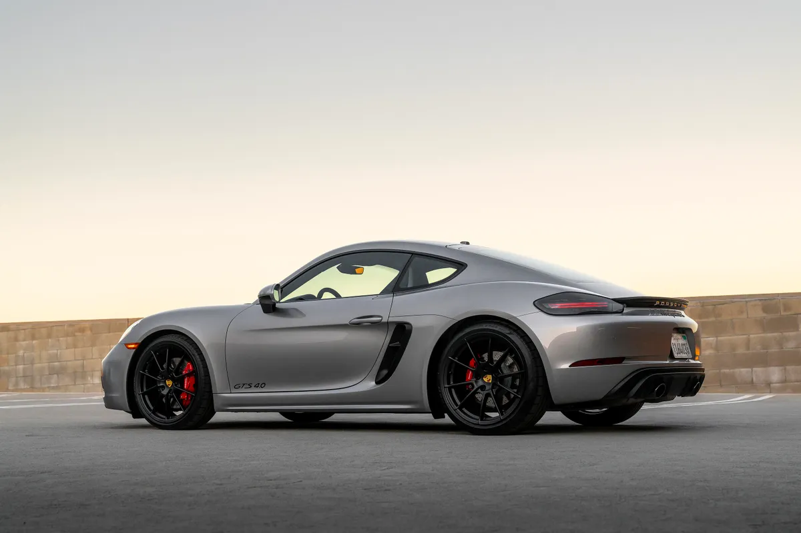
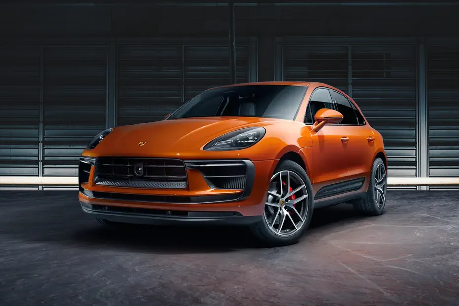
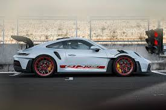

Моделі Porsche
-

-
911 Porsche
Ця модель дуже швидка та гарна! Зазвичай вона коштує дуже багато. А також автомобіль має преміальний салон.
- 
-
718 Porsche
Це іноді стара модель, але дуже швидка і все одно вважається преміальною! Вона має не такий продвинутий салон як у інших моделей.
- 
-
Porsche Macan
Ця модель одна з найкрацих SUV-авто від Porsche! Розгон від 1 до 100 не такий швидкий як у минулих моделей але це можна об'яснити його вісом. Також ця модель дуже зручна і може бути придназначена для середніх поїздок.
- 
-
Porsche 911 GT3
Ця модель більш швидка копія Porsche 911. Великих змін немає але вона має новий